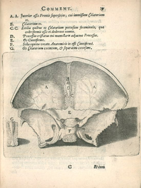

Addendum: Vesalius in Holland
The later sixteenth-century struggle of the Dutch Netherlands to achieve
independence from Spanish rule coincided with a new cultural vitality.
The foundation of the University of Leiden in 1575 was to be of immense importance
for the study of medicine and especially of anatomy. Many of the early professors
were from Padua. Pieter Paaw (1564-1617) who became Professor of Anatomy and Botany
at Leiden, and was responsible for having its new anatomy theatre built (1597),
had himself studied at Padua (Roberts and Tomlinson, 1992, pp.306-9).
A flourishing book trade made possible the extensive publication and dissemination
of scientific and technical information of all kinds. Among the books published were
many reissues and updated versions of older material, including much that derived from Vesalius.

1) Pieter Paaw (1564-1617), Epitome anatomica, Opus redivivum; cui accessere
notae ac commentaria P.Paaw , Leiden, 1616. Page size: 19.2 x 14.5cm. RCPE: Bh.2.14. Cushing VI.D.-19P.
Paaw (or Pauw) was Professor of Anatomy at Leiden. This reprint of Vesalius' Epitome
is accompanied by Paaw's Commentaries . It is illustrated with 13 engravings
copied from those in Vesalius' original Fabrica . It is interesting that in
many cases an attempt has been made to integrate the images with the text in
the way that Vesalius had originally intended. However, because the
illustrations were engraved, two separate printings were necessary, one for
text and one for image. The result is that the illustrations are not always
accurately or elegantly positioned on the page.
2) Nicolas Fontanus, De Humani Corporis Fabrica Epitome, cum Annotationibus
Nicolai Fontani , Amsterdam, 1642. Page size 37.4 x 25.5cm. RCPE: Ss.2.5. Cushing VI.D.-13.
This is a new edition of plates first used in Jacob Baumann's Anatomia Deudsch , printed in
Nuremberg in 1551. Baumann's plates were copied from those of Geminus.
© 2004 Edinburgh University Library / Royal College of Physicians of Edinburgh
www.lib.ed.ac.uk
05 April 2006
|